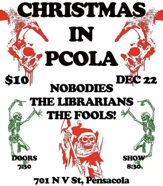
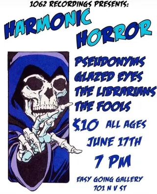

The Fools!
pcola local5 shows on the diypensacola record since 2022
on the record since March 2022, first seen at easy going gallery on a bill with the pensacola tap water experience and lovelight. last seen December 2022 at easy going gallery; the record's been quiet since.
- first playedMar 4, 2022 · easy going gallery
- most played ateasy going gallery ×4 shows
- biggest lineup5 acts · Mar 2022
- most shared bills withlovelight ×3 bills shared
flyer wall

Dec 22, 2022 · easy going gallery
Jun 17, 2022 · easy going gallery May 26, 2022 · easy going gallery
May 26, 2022 · easy going gallery May 13, 2022 · black cat bonanza
May 13, 2022 · black cat bonanza Mar 4, 2022 · easy going gallery
Mar 4, 2022 · easy going gallerypast shows
- 2022
- 22Dec 2022The Nobodies, The Librarians, The Fools!easy going gallery
- 17Jun 2022Pseudonyms, Glazed Eyes, The Librarians, The Fools!easy going gallery
- 26May 2022Lotg, The Fools!, Lovelighteasy going gallery
- 13May 2022Balance, Lovelight, The Fools!black cat bonanza
- 4Mar 2022The Pensacola Tap Water Experience, Lovelight, Kairo, Accident Prone, The Fools!easy going gallery
shared bills with
lovelight ×3the librarians ×2accident pronebalanceglazed eyeskairolotgpseudonymsthe nobodiesthe pensacola tap water experience
act pages are built automatically from the show archive, so something may be off: a misspelled name, a missing link, the wrong type, or a bad local/touring call. no disrespect meant. wrong on any of that, or want a listen link (youtube or bandcamp) or live footage added? send it in.